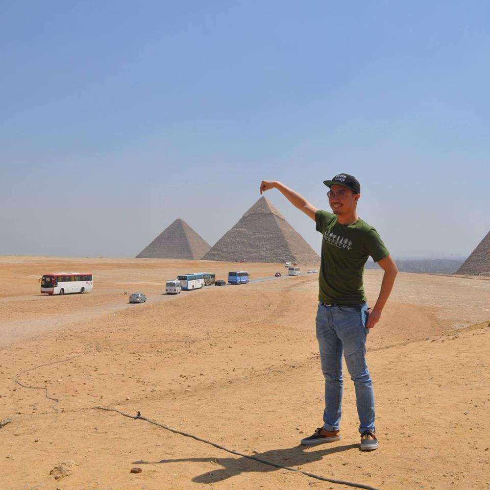

Joey is a wannabe code enthusiast from Markham, Ontario. Originally a student of forestry, Joey quickly found that today's political situation turned all the entry-level forestry jobs into unpaid internships. Joey now spends his time working at a bank and trying to break into the world of tech.
Joey's major accomplishments include finishing his Masters in Forest Conservation, contributing to the City of Toronto's ravine management plan, learning how to make pasta from scratch, and finally deadlifting 3 plates after 10 months of working out.
When not working, Joey enjoys fun things such as hiking, rock climbing, being snobby about vinyls and craft beers, live music, video games, board games, being a dog father, cooking, and running a food Instagram. Joey is much more interesting in real life, or so he tells everyone else.